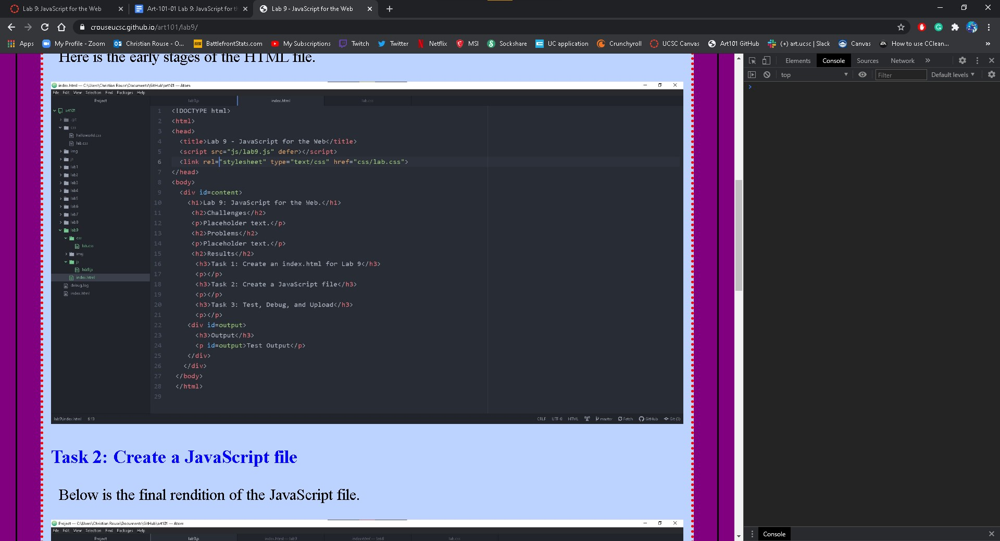

Lab 9: JavaScript for the Web.
Challenges
The challenge I faced was trying to understand what specific function does document.create and document.get accomplish and not having visual feedback to decipher.
Problems
Problems occurred when trying to accomplish task 2, where it states "Change the html attribute of new1El to say something new" as this was rather vague but also broad. There were no visual examples to assist with this but through some research I found that using .innerHTML did exactly that, as simply changing text in the HTML file seemed far too simplistic for a new assignment. However, I am still uncertain if this is what we were supposed to do as .innerHTML is not mentioned in the prompt. and I am also still uncertain what implementing this code does aside from displaying text no better or any differently than typical HTML text.
Results
Task 1: Create an index.html for Lab 9
Here are the early stages of the HTML file.
Task 2: Create a JavaScript file
Below is the final rendition of the JavaScript file.
Task 3: Test, Debug, and Upload
Here is the console showing a small error.
Local.
Published.
